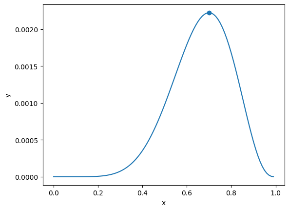
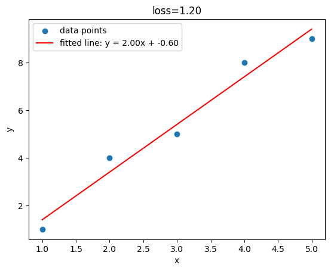

Machine Learning Notes: Maximum Likelihood, Cross Entropy
Maximum Likelihood Estimation: We have a model with parameters $\theta$ and a collection of data examples $X$, the probability of all the examples is the product of each probability:$$L(\theta)=\prod_{i=1}^{n} P_i(\theta; X_i) \tag{1}$$Then we choose the best parameters $\theta$ to maximize $L$.
§1 Examples
§1.1 Coin Flip
Consider flipping an unfair coin: In 10 flips $X$, there are 7 heads and 3 tails. Say the probability of head for a single flip is $\theta$, then the probability that this 10 flips happen in this way is $$L(\theta)=\theta^7 (1-\theta)^3 \tag{2}$$. By doing differentials or drawing this function we can see that, when $\theta=0.7$ this function has the biggest value $0.0022235661$.
import numpy as np
import matplotlib.pyplot as plt
def likelihood_coin_flip(x):
return x**7 * (1 - x)**3
x = np.arange(0, 1, 0.01)
y = likelihood_coin_flip(x)
plt.plot(x, y)
plt.scatter([0.7], [likelihood_coin_flip(0.7)])
plt.xlabel('x')
plt.ylabel('y')
plt.show()
will get:

§1.2 Line Fitting
For each data point on $\vec{y}=a\vec{x}+b$ we can write $$y_i=ax_i+b+\epsilon_i \tag{3}$$, where $\epsilon_i$ is the error for each data point. We assume error $\epsilon_i$ follows normal distribution with mean value $\mu=0$ and variance $\sigma$:$$P(\epsilon_i)=\frac{1}{\sqrt{2\pi\sigma^2}}e^{-\frac{\epsilon_i^2}{2\sigma^2}} \tag{4}$$. Put Eq.3 in Eq.4 we will get:$$P(\epsilon_i)=\frac{1}{\sqrt{2\pi\sigma^2}}e^{-\frac{(y_i-ax_i-b)^2}{2\sigma^2}} \tag{5}$$ So likelihood is $$\begin{aligned} L(a, b)&=\prod_{i=1}^{n}\frac{1}{\sqrt{2\pi\sigma^2}}e^{-\frac{(y_i-ax_i-b)^2}{2\sigma^2}} \\ &=\frac{1}{\sqrt{2\pi\sigma^2}}e^{-\frac{\sum_{i=1}^N (y_i-(ax_i+b))^2}{2\sigma^2}} \end{aligned} \tag{6}$$
To maximize likelihood is equivalent to minimize Mean Squared Error (nn.MSELoss) $$\text{MSE}(a,b)=\sum_{i=1}^N (y_i-(ax_i+b))^2 \tag{7}$$
import numpy as np
import matplotlib.pyplot as plt
# https://docs.scipy.org/doc/scipy/reference/generated/scipy.optimize.minimize.html
from scipy.optimize import minimize
x = np.array([1, 2, 3, 4, 5])
y = np.array([1, 4, 5, 8, 9])
def loss_function(params):
(a, b) = params
y_fit = a * x + b
loss = np.sum((y - y_fit)**2)
return loss
result = minimize(fun=loss_function, x0=(0, 0))
(a_fit, b_fit) = result.x
loss = result.fun
plt.title(f'loss={loss:.2f}')
plt.scatter(x, y, label='data points')
plt.plot(x, a_fit * x + b_fit, 'r', label='fitted line: '+f'y = {a_fit:.2f}x + {b_fit:.2f}')
plt.xlabel('x')
plt.ylabel('y')
plt.legend()
plt.show()
will get:

§2 Negative Log-Likelihood
Negative Log-Likelihood is defined as$$\text{NLL}(\theta) = - \log{L(\theta)} \tag{8}$$
- The purpose of $\log$ is to fit the likelihood into
float32, while maximizing the likelihood is the same thing as maximizing the log-likelihood ($f(x)=\log x$ is an increasing function of $x$). - Minimizing loss is more common in Machine Learning, while minimizing the loss is the same thing as maximizing the negative log-likelihood.
§3 Cross Entropy
Consider a binary classification: There are $n$ data examples. $1$ and $0$ are the positive and negative class label $y_i$. $p_i$ is the probability that the $i$ example is predicted to be positive. For each data example, if the true label is positive, the probability of correct prediction is $p_i$, or $p_i^{y_i}$; if the true label is negative, the probability of correct prediction is $(1-p_i)$, or $(1-p_i)^{1-y_i}$. We can summarize the probability of correct prediction as $p_i^{y_i} (1-p_i)^{1-y_i}$. Thus, similar to Eq.2 for coin flip, we can write likelihood as $$L(\theta)=\prod_{i=1}^{n} p_i^{y_i} (1-p_i)^{1-y_i} \tag{9}$$. Put Eq.9 in Eq.8 we will get negative log-likelihood for binary classification: $$\begin{aligned} \text{NLL}(\theta) &=-\log{\prod_{i=1}^{n} p_i^{y_i} (1-p_i)^{1-y_i}} \\ &= - \sum_{i=1}^n (y_i \log p_i + (1 - y_i) \log (1 - p_i)) \end{aligned} \tag{10}$$, which is also called Cross Entropy for binary classification, or Binary Cross Entropy.
Cross Entropy for multi-class classification is generalization of binary cross entropy: $$\text{CE}(y,p) = -\sum_{i=1}^n y_i \log{p_i} \tag{11}$$, where $y_i=1$ for positive class and $y_i=0$ for other negative classes, and $p_i$ is the predicted distribution.
The reason nn.CrossEntropyLoss put the probability firstly in nn.LogSoftmax is to normalize the probability so that every probability is positive and the sum of probability is $1$.